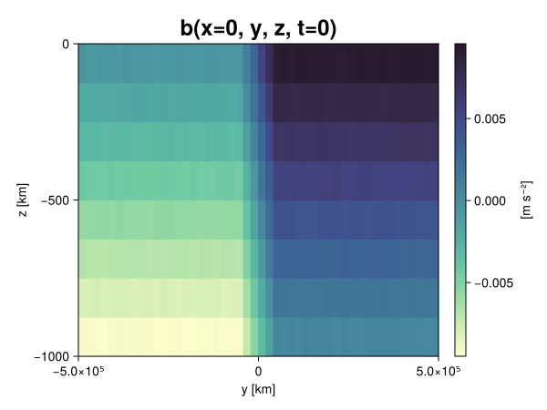
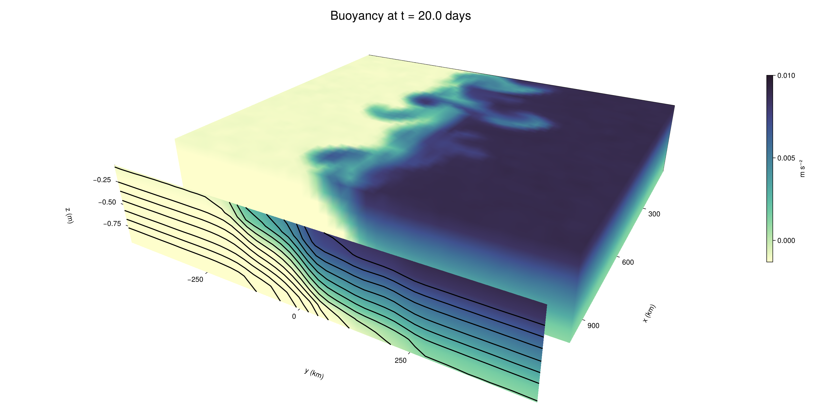

Baroclinic adjustment
In this example, we simulate the evolution and equilibration of a baroclinically unstable front.
Install dependencies
First let's make sure we have all required packages installed.
using Pkg
pkg"add Oceananigans, CairoMakie"using Oceananigans
using Oceananigans.UnitsGrid
We use a three-dimensional channel that is periodic in the x direction:
Lx = 1000kilometers # east-west extent [m]
Ly = 1000kilometers # north-south extent [m]
Lz = 1kilometers # depth [m]
grid = RectilinearGrid(size = (48, 48, 8),
x = (0, Lx),
y = (-Ly/2, Ly/2),
z = (-Lz, 0),
topology = (Periodic, Bounded, Bounded))48×48×8 RectilinearGrid{Float64, Periodic, Bounded, Bounded} on CPU with 3×3×3 halo
├── Periodic x ∈ [0.0, 1.0e6) regularly spaced with Δx=20833.3
├── Bounded y ∈ [-500000.0, 500000.0] regularly spaced with Δy=20833.3
└── Bounded z ∈ [-1000.0, 0.0] regularly spaced with Δz=125.0Model
We built a HydrostaticFreeSurfaceModel with an ImplicitFreeSurface solver. Regarding Coriolis, we use a beta-plane centered at 45° South.
model = HydrostaticFreeSurfaceModel(; grid,
coriolis = BetaPlane(latitude = -45),
buoyancy = BuoyancyTracer(),
tracers = :b,
momentum_advection = WENO(),
tracer_advection = WENO())HydrostaticFreeSurfaceModel{CPU, RectilinearGrid}(time = 0 seconds, iteration = 0)
├── grid: 48×48×8 RectilinearGrid{Float64, Periodic, Bounded, Bounded} on CPU with 3×3×3 halo
├── timestepper: QuasiAdamsBashforth2TimeStepper
├── tracers: b
├── closure: Nothing
├── buoyancy: BuoyancyTracer with ĝ = NegativeZDirection()
├── free surface: ImplicitFreeSurface with gravitational acceleration 9.80665 m s⁻²
│ └── solver: FFTImplicitFreeSurfaceSolver
├── advection scheme:
│ ├── momentum: WENO reconstruction order 5
│ └── b: WENO reconstruction order 5
└── coriolis: BetaPlane{Float64}We start our simulation from rest with a baroclinically unstable buoyancy distribution. We use ramp(y, Δy), defined below, to specify a front with width Δy and horizontal buoyancy gradient M². We impose the front on top of a vertical buoyancy gradient N² and a bit of noise.
"""
ramp(y, Δy)
Linear ramp from 0 to 1 between -Δy/2 and +Δy/2.
For example:
```
y < -Δy/2 => ramp = 0
-Δy/2 < y < -Δy/2 => ramp = y / Δy
y > Δy/2 => ramp = 1
```
"""
ramp(y, Δy) = min(max(0, y/Δy + 1/2), 1)
N² = 1e-5 # [s⁻²] buoyancy frequency / stratification
M² = 1e-7 # [s⁻²] horizontal buoyancy gradient
Δy = 100kilometers # width of the region of the front
Δb = Δy * M² # buoyancy jump associated with the front
ϵb = 1e-2 * Δb # noise amplitude
bᵢ(x, y, z) = N² * z + Δb * ramp(y, Δy) + ϵb * randn()
set!(model, b=bᵢ)Let's visualize the initial buoyancy distribution.
using CairoMakie
# Build coordinates with units of kilometers
x, y, z = 1e-3 .* nodes(grid, (Center(), Center(), Center()))
b = model.tracers.b
fig, ax, hm = heatmap(view(b, 1, :, :),
colormap = :deep,
axis = (xlabel = "y [km]",
ylabel = "z [km]",
title = "b(x=0, y, z, t=0)",
titlesize = 24))
Colorbar(fig[1, 2], hm, label = "[m s⁻²]")
fig
Simulation
Now let's build a Simulation.
simulation = Simulation(model, Δt=20minutes, stop_time=20days)Simulation of HydrostaticFreeSurfaceModel{CPU, RectilinearGrid}(time = 0 seconds, iteration = 0)
├── Next time step: 20 minutes
├── Elapsed wall time: 0 seconds
├── Wall time per iteration: NaN days
├── Stop time: 20 days
├── Stop iteration : Inf
├── Wall time limit: Inf
├── Callbacks: OrderedDict with 4 entries:
│ ├── stop_time_exceeded => Callback of stop_time_exceeded on IterationInterval(1)
│ ├── stop_iteration_exceeded => Callback of stop_iteration_exceeded on IterationInterval(1)
│ ├── wall_time_limit_exceeded => Callback of wall_time_limit_exceeded on IterationInterval(1)
│ └── nan_checker => Callback of NaNChecker for u on IterationInterval(100)
├── Output writers: OrderedDict with no entries
└── Diagnostics: OrderedDict with no entriesWe add a TimeStepWizard callback to adapt the simulation's time-step,
conjure_time_step_wizard!(simulation, IterationInterval(20), cfl=0.2, max_Δt=20minutes)Also, we add a callback to print a message about how the simulation is going,
using Printf
wall_clock = Ref(time_ns())
function print_progress(sim)
u, v, w = model.velocities
progress = 100 * (time(sim) / sim.stop_time)
elapsed = (time_ns() - wall_clock[]) / 1e9
@printf("[%05.2f%%] i: %d, t: %s, wall time: %s, max(u): (%6.3e, %6.3e, %6.3e) m/s, next Δt: %s\n",
progress, iteration(sim), prettytime(sim), prettytime(elapsed),
maximum(abs, u), maximum(abs, v), maximum(abs, w), prettytime(sim.Δt))
wall_clock[] = time_ns()
return nothing
end
add_callback!(simulation, print_progress, IterationInterval(100))Diagnostics/Output
Here, we save the buoyancy, $b$, at the edges of our domain as well as the zonal ($x$) average of buoyancy.
u, v, w = model.velocities
ζ = ∂x(v) - ∂y(u)
B = Average(b, dims=1)
U = Average(u, dims=1)
V = Average(v, dims=1)
filename = "baroclinic_adjustment"
save_fields_interval = 0.5day
slicers = (east = (grid.Nx, :, :),
north = (:, grid.Ny, :),
bottom = (:, :, 1),
top = (:, :, grid.Nz))
for side in keys(slicers)
indices = slicers[side]
simulation.output_writers[side] = JLD2OutputWriter(model, (; b, ζ);
filename = filename * "_$(side)_slice",
schedule = TimeInterval(save_fields_interval),
overwrite_existing = true,
indices)
end
simulation.output_writers[:zonal] = JLD2OutputWriter(model, (; b=B, u=U, v=V);
filename = filename * "_zonal_average",
schedule = TimeInterval(save_fields_interval),
overwrite_existing = true)JLD2OutputWriter scheduled on TimeInterval(12 hours):
├── filepath: ./baroclinic_adjustment_zonal_average.jld2
├── 3 outputs: (b, u, v)
├── array type: Array{Float64}
├── including: [:grid, :coriolis, :buoyancy, :closure]
├── file_splitting: NoFileSplitting
└── file size: 30.7 KiBNow we're ready to run.
@info "Running the simulation..."
run!(simulation)
@info "Simulation completed in " * prettytime(simulation.run_wall_time)[ Info: Running the simulation...
[ Info: Initializing simulation...
[00.00%] i: 0, t: 0 seconds, wall time: 30.570 seconds, max(u): (0.000e+00, 0.000e+00, 0.000e+00) m/s, next Δt: 20 minutes
[ Info: ... simulation initialization complete (30.472 seconds)
[ Info: Executing initial time step...
[ Info: ... initial time step complete (25.490 seconds).
[06.94%] i: 100, t: 1.389 days, wall time: 41.700 seconds, max(u): (1.281e-01, 1.126e-01, 1.560e-03) m/s, next Δt: 20 minutes
[13.89%] i: 200, t: 2.778 days, wall time: 1.295 seconds, max(u): (2.127e-01, 1.670e-01, 1.807e-03) m/s, next Δt: 20 minutes
[20.83%] i: 300, t: 4.167 days, wall time: 1.213 seconds, max(u): (3.008e-01, 2.384e-01, 1.745e-03) m/s, next Δt: 20 minutes
[27.78%] i: 400, t: 5.556 days, wall time: 1.215 seconds, max(u): (3.766e-01, 3.577e-01, 1.806e-03) m/s, next Δt: 20 minutes
[34.72%] i: 500, t: 6.944 days, wall time: 1.225 seconds, max(u): (4.507e-01, 4.737e-01, 1.954e-03) m/s, next Δt: 20 minutes
[41.67%] i: 600, t: 8.333 days, wall time: 1.162 seconds, max(u): (5.797e-01, 7.131e-01, 2.571e-03) m/s, next Δt: 20 minutes
[48.61%] i: 700, t: 9.722 days, wall time: 1.276 seconds, max(u): (8.520e-01, 1.120e+00, 3.955e-03) m/s, next Δt: 20 minutes
[55.56%] i: 800, t: 11.111 days, wall time: 1.371 seconds, max(u): (1.329e+00, 1.146e+00, 4.431e-03) m/s, next Δt: 20 minutes
[62.50%] i: 900, t: 12.500 days, wall time: 1.149 seconds, max(u): (1.307e+00, 1.031e+00, 4.842e-03) m/s, next Δt: 20 minutes
[69.44%] i: 1000, t: 13.889 days, wall time: 1.178 seconds, max(u): (1.178e+00, 1.016e+00, 4.696e-03) m/s, next Δt: 20 minutes
[76.39%] i: 1100, t: 15.278 days, wall time: 1.171 seconds, max(u): (1.286e+00, 1.227e+00, 4.217e-03) m/s, next Δt: 20 minutes
[83.33%] i: 1200, t: 16.667 days, wall time: 1.244 seconds, max(u): (1.303e+00, 1.381e+00, 3.789e-03) m/s, next Δt: 20 minutes
[90.28%] i: 1300, t: 18.056 days, wall time: 1.149 seconds, max(u): (1.353e+00, 1.262e+00, 3.610e-03) m/s, next Δt: 20 minutes
[97.22%] i: 1400, t: 19.444 days, wall time: 1.213 seconds, max(u): (1.328e+00, 1.402e+00, 2.599e-03) m/s, next Δt: 20 minutes
[ Info: Simulation is stopping after running for 1.285 minutes.
[ Info: Simulation time 20 days equals or exceeds stop time 20 days.
[ Info: Simulation completed in 1.285 minutes
Visualization
All that's left is to make a pretty movie. Actually, we make two visualizations here. First, we illustrate how to make a 3D visualization with Makie's Axis3 and Makie.surface. Then we make a movie in 2D. We use CairoMakie in this example, but note that using GLMakie is more convenient on a system with OpenGL, as figures will be displayed on the screen.
using CairoMakieThree-dimensional visualization
We load the saved buoyancy output on the top, north, and east surface as FieldTimeSerieses.
filename = "baroclinic_adjustment"
sides = keys(slicers)
slice_filenames = NamedTuple(side => filename * "_$(side)_slice.jld2" for side in sides)
b_timeserieses = (east = FieldTimeSeries(slice_filenames.east, "b"),
north = FieldTimeSeries(slice_filenames.north, "b"),
top = FieldTimeSeries(slice_filenames.top, "b"))
B_timeseries = FieldTimeSeries(filename * "_zonal_average.jld2", "b")
times = B_timeseries.times
grid = B_timeseries.grid48×48×8 RectilinearGrid{Float64, Periodic, Bounded, Bounded} on CPU with 3×3×3 halo
├── Periodic x ∈ [0.0, 1.0e6) regularly spaced with Δx=20833.3
├── Bounded y ∈ [-500000.0, 500000.0] regularly spaced with Δy=20833.3
└── Bounded z ∈ [-1000.0, 0.0] regularly spaced with Δz=125.0We build the coordinates. We rescale horizontal coordinates to kilometers.
xb, yb, zb = nodes(b_timeserieses.east)
xb = xb ./ 1e3 # convert m -> km
yb = yb ./ 1e3 # convert m -> km
Nx, Ny, Nz = size(grid)
x_xz = repeat(x, 1, Nz)
y_xz_north = y[end] * ones(Nx, Nz)
z_xz = repeat(reshape(z, 1, Nz), Nx, 1)
x_yz_east = x[end] * ones(Ny, Nz)
y_yz = repeat(y, 1, Nz)
z_yz = repeat(reshape(z, 1, Nz), grid.Ny, 1)
x_xy = x
y_xy = y
z_xy_top = z[end] * ones(grid.Nx, grid.Ny)Then we create a 3D axis. We use zonal_slice_displacement to control where the plot of the instantaneous zonal average flow is located.
fig = Figure(size = (1600, 800))
zonal_slice_displacement = 1.2
ax = Axis3(fig[2, 1],
aspect=(1, 1, 1/5),
xlabel = "x (km)",
ylabel = "y (km)",
zlabel = "z (m)",
xlabeloffset = 100,
ylabeloffset = 100,
zlabeloffset = 100,
limits = ((x[1], zonal_slice_displacement * x[end]), (y[1], y[end]), (z[1], z[end])),
elevation = 0.45,
azimuth = 6.8,
xspinesvisible = false,
zgridvisible = false,
protrusions = 40,
perspectiveness = 0.7)Axis3()We use data from the final savepoint for the 3D plot. Note that this plot can easily be animated by using Makie's Observable. To dive into Observables, check out Makie.jl's Documentation.
n = length(times)41Now let's make a 3D plot of the buoyancy and in front of it we'll use the zonally-averaged output to plot the instantaneous zonal-average of the buoyancy.
b_slices = (east = interior(b_timeserieses.east[n], 1, :, :),
north = interior(b_timeserieses.north[n], :, 1, :),
top = interior(b_timeserieses.top[n], :, :, 1))
# Zonally-averaged buoyancy
B = interior(B_timeseries[n], 1, :, :)
clims = 1.1 .* extrema(b_timeserieses.top[n][:])
kwargs = (colorrange=clims, colormap=:deep, shading=NoShading)
surface!(ax, x_yz_east, y_yz, z_yz; color = b_slices.east, kwargs...)
surface!(ax, x_xz, y_xz_north, z_xz; color = b_slices.north, kwargs...)
surface!(ax, x_xy, y_xy, z_xy_top; color = b_slices.top, kwargs...)
sf = surface!(ax, zonal_slice_displacement .* x_yz_east, y_yz, z_yz; color = B, kwargs...)
contour!(ax, y, z, B; transformation = (:yz, zonal_slice_displacement * x[end]),
levels = 15, linewidth = 2, color = :black)
Colorbar(fig[2, 2], sf, label = "m s⁻²", height = Relative(0.4), tellheight=false)
title = "Buoyancy at t = " * string(round(times[n] / day, digits=1)) * " days"
fig[1, 1:2] = Label(fig, title; fontsize = 24, tellwidth = false, padding = (0, 0, -120, 0))
rowgap!(fig.layout, 1, Relative(-0.2))
colgap!(fig.layout, 1, Relative(-0.1))
save("baroclinic_adjustment_3d.png", fig)
Two-dimensional movie
We make a 2D movie that shows buoyancy $b$ and vertical vorticity $ζ$ at the surface, as well as the zonally-averaged zonal and meridional velocities $U$ and $V$ in the $(y, z)$ plane. First we load the FieldTimeSeries and extract the additional coordinates we'll need for plotting
ζ_timeseries = FieldTimeSeries(slice_filenames.top, "ζ")
U_timeseries = FieldTimeSeries(filename * "_zonal_average.jld2", "u")
B_timeseries = FieldTimeSeries(filename * "_zonal_average.jld2", "b")
V_timeseries = FieldTimeSeries(filename * "_zonal_average.jld2", "v")
xζ, yζ, zζ = nodes(ζ_timeseries)
yv = ynodes(V_timeseries)
xζ = xζ ./ 1e3 # convert m -> km
yζ = yζ ./ 1e3 # convert m -> km
yv = yv ./ 1e3 # convert m -> km49-element Vector{Float64}:
-500.0
-479.1666666666667
-458.3333333333333
-437.5
-416.6666666666667
-395.8333333333333
-375.0
-354.1666666666667
-333.3333333333333
-312.5
-291.6666666666667
-270.8333333333333
-250.0
-229.16666666666666
-208.33333333333334
-187.5
-166.66666666666666
-145.83333333333334
-125.0
-104.16666666666667
-83.33333333333333
-62.5
-41.666666666666664
-20.833333333333332
0.0
20.833333333333332
41.666666666666664
62.5
83.33333333333333
104.16666666666667
125.0
145.83333333333334
166.66666666666666
187.5
208.33333333333334
229.16666666666666
250.0
270.8333333333333
291.6666666666667
312.5
333.3333333333333
354.1666666666667
375.0
395.8333333333333
416.6666666666667
437.5
458.3333333333333
479.1666666666667
500.0Next, we set up a plot with 4 panels. The top panels are large and square, while the bottom panels get a reduced aspect ratio through rowsize!.
set_theme!(Theme(fontsize=24))
fig = Figure(size=(1800, 1000))
axb = Axis(fig[1, 2], xlabel="x (km)", ylabel="y (km)", aspect=1)
axζ = Axis(fig[1, 3], xlabel="x (km)", ylabel="y (km)", aspect=1, yaxisposition=:right)
axu = Axis(fig[2, 2], xlabel="y (km)", ylabel="z (m)")
axv = Axis(fig[2, 3], xlabel="y (km)", ylabel="z (m)", yaxisposition=:right)
rowsize!(fig.layout, 2, Relative(0.3))To prepare a plot for animation, we index the timeseries with an Observable,
n = Observable(1)
b_top = @lift interior(b_timeserieses.top[$n], :, :, 1)
ζ_top = @lift interior(ζ_timeseries[$n], :, :, 1)
U = @lift interior(U_timeseries[$n], 1, :, :)
V = @lift interior(V_timeseries[$n], 1, :, :)
B = @lift interior(B_timeseries[$n], 1, :, :)Observable([-0.009384731745205226 -0.008128987201664226 -0.006880076449476348 -0.005602098481620239 -0.0043761312311889665 -0.0031275517482133026 -0.0018768569793489347 -0.0006523095894609973; -0.009347719071444013 -0.008155641174974013 -0.006908322407645356 -0.005622812765738466 -0.004372057093135336 -0.003135337035144757 -0.0018754716384955597 -0.0006363523055190393; -0.009355404909160599 -0.008137317849461534 -0.0068922308913597725 -0.005618996499119809 -0.004362244135258536 -0.003126893215576127 -0.0018924579624764748 -0.0006154258414000697; -0.009364619670028062 -0.008102535881033096 -0.006892524511689619 -0.005598397336362772 -0.004382924216841337 -0.003108097323189699 -0.0018812688207348824 -0.0006264535549117834; -0.009368093366245587 -0.008122973450856595 -0.006901289982326808 -0.005619885018898092 -0.004358639951889892 -0.0031192185339704494 -0.0018959324038975304 -0.0006206190845749567; -0.009365079235729953 -0.008128849222438226 -0.006858485581740032 -0.005635020260765527 -0.004382810528128756 -0.003115912189351816 -0.0018844352992153713 -0.0006408800781144444; -0.009383714440505965 -0.008139123107813817 -0.006884203958876525 -0.005638342644741834 -0.00438355527041852 -0.003117252372187929 -0.0018843779105020917 -0.0006459597000826149; -0.00936498258356318 -0.008150171786073674 -0.006868708054075569 -0.005619194206150327 -0.004359658379764988 -0.003143485364653755 -0.0018826396839353784 -0.0006197444741608975; -0.009395622202519298 -0.008112104366364649 -0.006890785016373555 -0.005610523936027785 -0.004389424001401067 -0.003131051823508174 -0.0018749025264981438 -0.000652651857468022; -0.009369860053718858 -0.008107595652030524 -0.006866919998026987 -0.005632814310370615 -0.004378545914042581 -0.003140133474663216 -0.0018963778337391102 -0.0006133828923476308; -0.009391995204724292 -0.00812526548432386 -0.006879193431015368 -0.00563273614077302 -0.004382646659174559 -0.003090562444040815 -0.0018953128897851244 -0.0006197603160639216; -0.00937011178715345 -0.008116189746776517 -0.006895773128191631 -0.005651960002097335 -0.004408836256487602 -0.003133445168973763 -0.0018844058159888074 -0.0006144884560594828; -0.00937343658294304 -0.008132450701260369 -0.006864679788522325 -0.005623306400104795 -0.00436695055841959 -0.003129820547169383 -0.0018756692306630487 -0.0005966496271973822; -0.009377615897210702 -0.0081098571816223 -0.0068717385622110785 -0.005629017478367929 -0.004364793427356693 -0.0031018466248663077 -0.0018607743709255734 -0.0006488685046262848; -0.009366060241254444 -0.008123172284770774 -0.00686491288832112 -0.0056388501083342694 -0.004382744161962312 -0.0031219443798756706 -0.0018643164913325321 -0.0006115810459936838; -0.009387267581356584 -0.00812069245936963 -0.006865334135997807 -0.005598870955058027 -0.004361265702618306 -0.003143432978140089 -0.0018801083991914613 -0.0006345040237889547; -0.00939167748584579 -0.00813270112273716 -0.006871026127637966 -0.0055923489601579545 -0.004372857896617527 -0.0031160969182291234 -0.0018480652480355319 -0.000645630506907641; -0.00938027040154669 -0.008123341241067625 -0.006872795306966356 -0.005610946818785427 -0.004381101908637157 -0.003138062764221357 -0.001884633311529619 -0.0006102927826111235; -0.00937992412193097 -0.008135943966096284 -0.006878224652206162 -0.005659328233824759 -0.004376054046422235 -0.003100816558543619 -0.0019013067215484785 -0.0006105406513367308; -0.009383367148059282 -0.0081430838716355 -0.006891507512338607 -0.005633142461128208 -0.004374909993241082 -0.003144706223578205 -0.0018808162401093792 -0.0005978180491613886; -0.009374923904253513 -0.00814337858900902 -0.006847599702972166 -0.005618391322687666 -0.004368257423815584 -0.003114662786023615 -0.0018733538824409633 -0.0006246460679513326; -0.009404963269637814 -0.008088199311977056 -0.00689458041291047 -0.005630867634108025 -0.004393646134461662 -0.0031258679778443503 -0.0018787540074842405 -0.0006183737820002047; -0.007520705350590884 -0.006251761914257414 -0.005006367715872 -0.003739602551852205 -0.002525136313098532 -0.0012551600866289646 -1.112764862301376e-5 0.0012609903824828818; -0.005430910171109377 -0.004153108782631456 -0.0029121955909377703 -0.0016717938296872646 -0.00040614643374373946 0.000822482154106516 0.0020773690259130034 0.0033409916676051623; -0.0033507496613078155 -0.002079622478827812 -0.0008190175743589454 0.0004245969007456109 0.0016622884171123016 0.0029301324101948818 0.004187409521847682 0.005417743401602777; -0.0012462731548097843 -9.915774884692979e-6 0.0012300284961953994 0.002476848499631741 0.0037537602764763714 0.005004589440494066 0.00626216903424037 0.007523815917970616; 0.0006190874468243253 0.0018838089481023976 0.0031394951752942188 0.004372552995673395 0.0056336707187403 0.006881538408774576 0.008111692010901318 0.009376339447105041; 0.000629164949999797 0.0018749979343118596 0.003131615560470849 0.0043885240776098955 0.005646441354280441 0.0068634507079016705 0.008114339742029963 0.0093713937547644; 0.0006190141971021307 0.001871683746606426 0.003112576179858682 0.0043883538471712535 0.0056329171810553845 0.006890313665313924 0.00814161922838911 0.009379057916913605; 0.0006290216492301964 0.0018965035478766235 0.003113554555511108 0.004358312622316648 0.005612747754729694 0.006873187192288541 0.008130458635551627 0.009388403899312675; 0.0006192178921007662 0.0018609110450160393 0.003127255620784813 0.0043758686950692 0.005604190982736301 0.006860382139763363 0.008102806227632939 0.00936568028890618; 0.0006310401408450239 0.0018920592567048527 0.0031232147695890874 0.004382810510009517 0.005628754901574034 0.006896977564571294 0.00810291548748082 0.009368909519758882; 0.0006276664931676137 0.001868721683638176 0.0031327893271264682 0.0043628310204475405 0.005615072626010883 0.006881337757005497 0.008100303439839944 0.009361814437250208; 0.0006084175207659068 0.0018748545765980955 0.00312483586330608 0.004375513379926295 0.005593348832089315 0.006890335527858983 0.008113959054462855 0.009382254010945827; 0.0006315507661891336 0.0018883155970306409 0.003128975988848868 0.004368870181942385 0.005615427485439446 0.006858153475254025 0.008095739263980247 0.009360319097920998; 0.0006016849886019993 0.0018643637282239297 0.0031076295795477 0.0043576447538270675 0.005653476189980518 0.006864932984263665 0.008138108213426537 0.00938749500585942; 0.0006290811037080432 0.0018947892171917405 0.0031266661038776597 0.004394432764780393 0.005624427577754616 0.006875524524881875 0.008112061743989929 0.009400265261571021; 0.0006207908796749857 0.0018581800394469469 0.003108196247182842 0.004357616950950785 0.0056081839883947646 0.006875274661339216 0.00814503784656497 0.009383993205348792; 0.0005962265992399099 0.0018877784925474216 0.0031136781935656916 0.004383289048303531 0.0056259625529958045 0.006859567126541069 0.008112217768713757 0.00938255610878636; 0.0006045297216733741 0.0018655836231117225 0.0031396195165191584 0.0043862403335636225 0.005618230185241112 0.006849484720377548 0.008123136241476604 0.009372194151848921; 0.0006102440975906065 0.00187840510534771 0.0031336390419438344 0.004363888588932447 0.005649163259505044 0.006876148343004741 0.008152444924381405 0.009380306579645977; 0.0006456641282504924 0.001889451584836406 0.003122726111104312 0.004409889042212863 0.005609859152113324 0.006864121880022951 0.00813855788449023 0.009382156611647527; 0.000637831806072601 0.0018919391595522644 0.0031300894049086946 0.004359646315828432 0.00561035106589317 0.006866595871776311 0.008124557864897608 0.009379619296113546; 0.0006370546468840863 0.0018820627601427696 0.0031238125358743593 0.004400304517729269 0.005599063198622624 0.006903889369555949 0.00812515216251324 0.009381669104973964; 0.0006419202811492514 0.0018953771134288674 0.00314555655073769 0.004359596898811185 0.005625639863618995 0.006874510970887422 0.008128763674585001 0.009417681443254992; 0.0006222463287112826 0.0018503094807944132 0.0031591765416701437 0.004374356038284131 0.005609655471276255 0.006852209755454715 0.008121781905365206 0.009332615744949839; 0.0006280737344475855 0.001889772725735577 0.003133333428811382 0.004379087358073692 0.00561507492173996 0.0068736074625404125 0.008133100268024475 0.009356857074757117; 0.0006562319537683239 0.0018726049877581992 0.0031367079742206337 0.004376199349354264 0.005604897705842566 0.006895574491155098 0.00811608768369844 0.009365282383416445])
and then build our plot:
hm = heatmap!(axb, xb, yb, b_top, colorrange=(0, Δb), colormap=:thermal)
Colorbar(fig[1, 1], hm, flipaxis=false, label="Surface b(x, y) (m s⁻²)")
hm = heatmap!(axζ, xζ, yζ, ζ_top, colorrange=(-5e-5, 5e-5), colormap=:balance)
Colorbar(fig[1, 4], hm, label="Surface ζ(x, y) (s⁻¹)")
hm = heatmap!(axu, yb, zb, U; colorrange=(-5e-1, 5e-1), colormap=:balance)
Colorbar(fig[2, 1], hm, flipaxis=false, label="Zonally-averaged U(y, z) (m s⁻¹)")
contour!(axu, yb, zb, B; levels=15, color=:black)
hm = heatmap!(axv, yv, zb, V; colorrange=(-1e-1, 1e-1), colormap=:balance)
Colorbar(fig[2, 4], hm, label="Zonally-averaged V(y, z) (m s⁻¹)")
contour!(axv, yb, zb, B; levels=15, color=:black)Finally, we're ready to record the movie.
frames = 1:length(times)
record(fig, filename * ".mp4", frames, framerate=8) do i
n[] = i
endThis page was generated using Literate.jl.